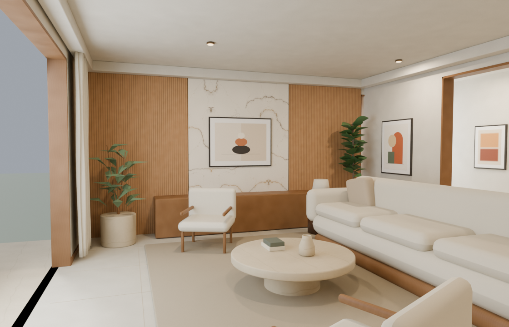
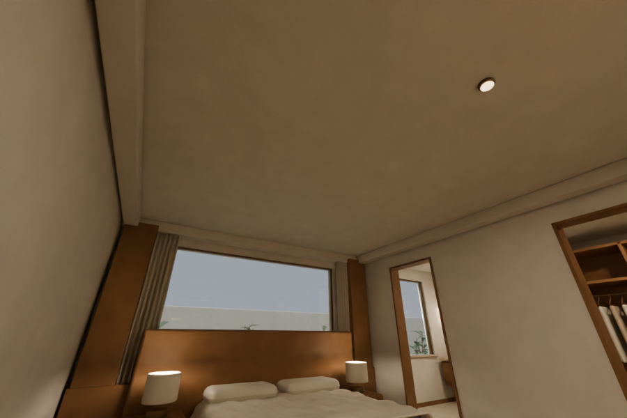
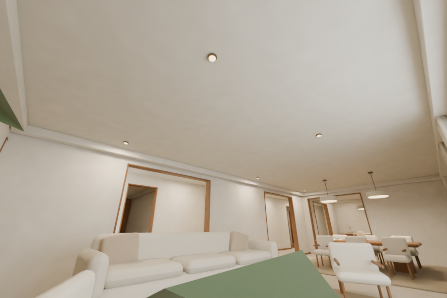
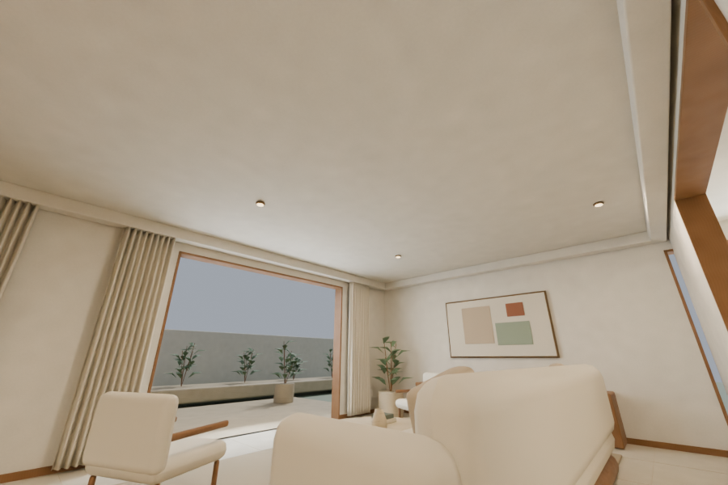
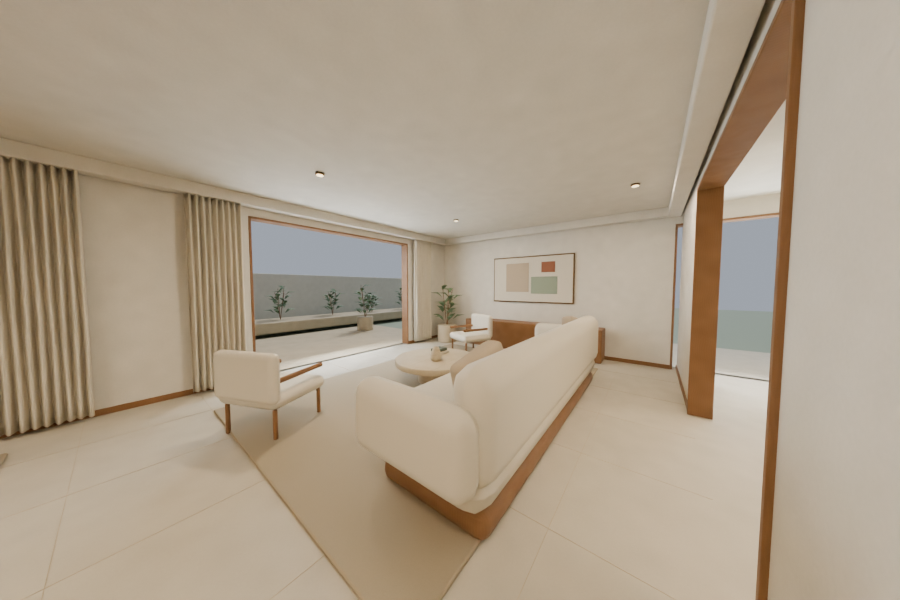
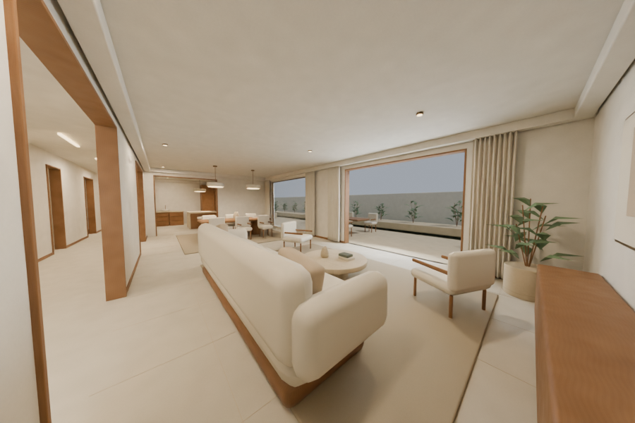
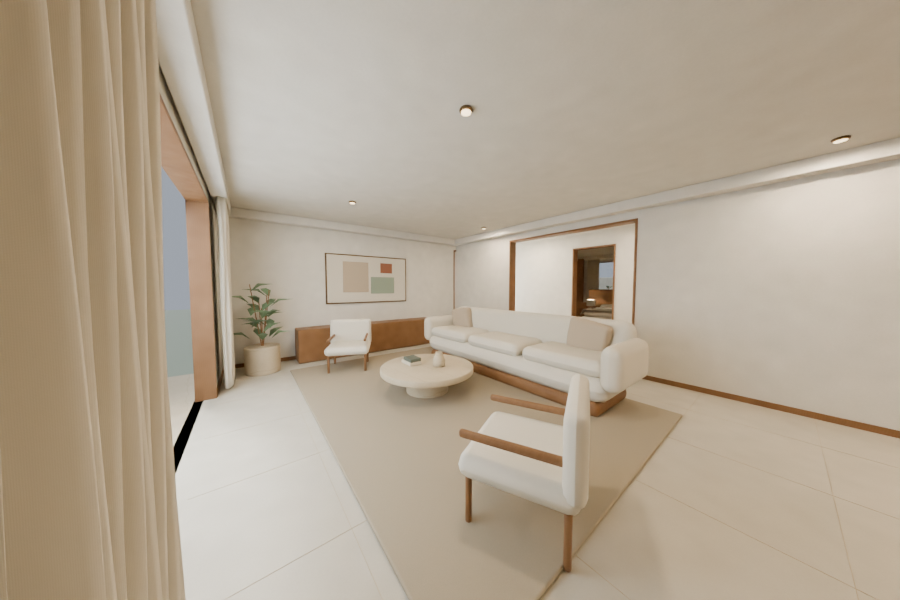
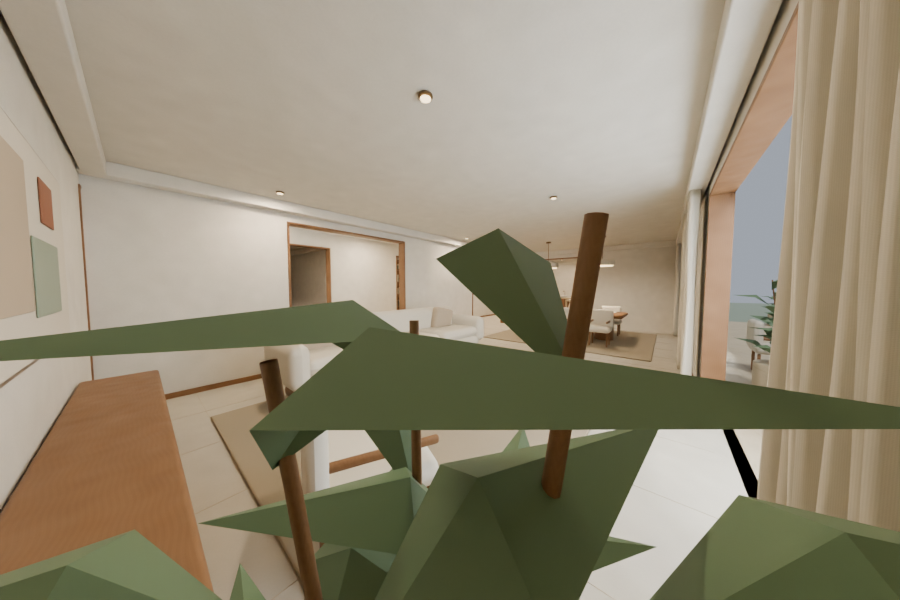
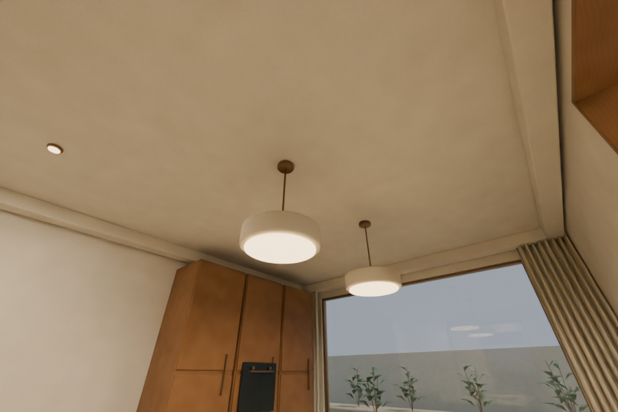

Warm materials.
Room to feel at home.
The approved layout, developed into a detailed Blender interior. Explore the rendered room views below. These are authored scene renders; the live website walkthrough is the next stage.

Living room
Tailored linen, oak joinery and a honed travertine table.
Layout and material direction approved. Detailed interior review pending. The editable Blender source includes the original texture maps, fixture lights and cameras. Browser materials, performance and the moving walkthrough still require export and runtime verification.
Layout and room relationships

Detailed furnishing adjustments preserve the approved room layout while clearing the kitchen entrance and moving the ensuite vanity off its window.
Ceiling and wide-angle inspection views








Open the detailed Blender source · Geometry and route checks · Original layout review